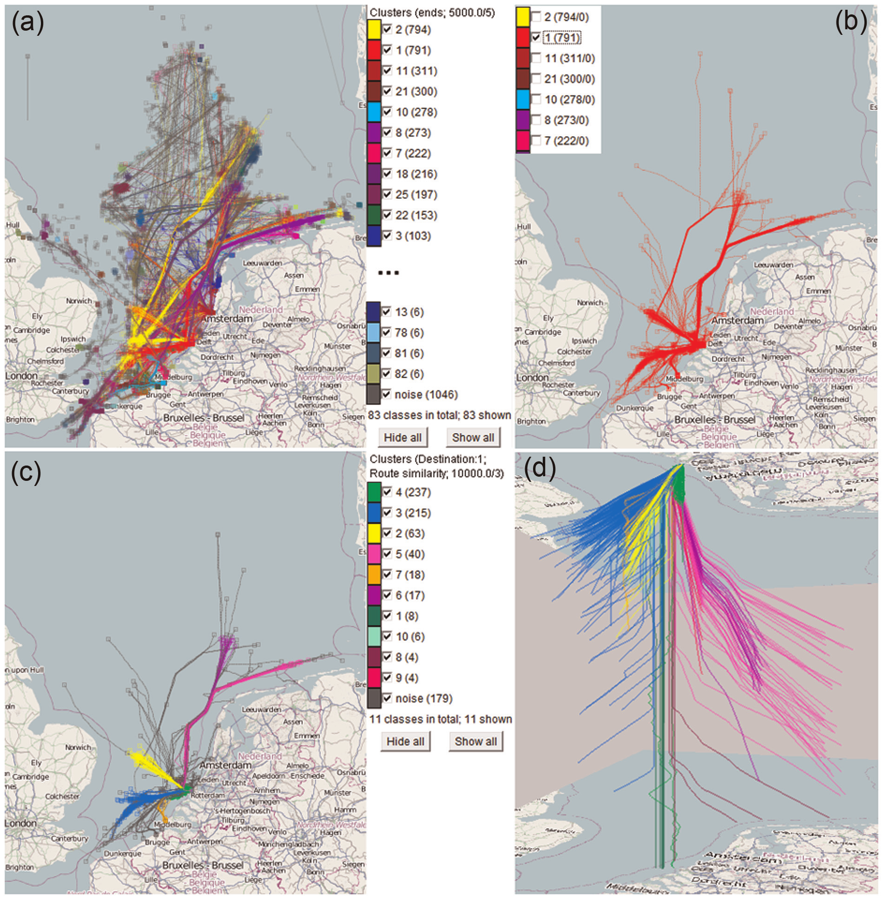

4. GEOVISUALIZAÇÃO E ANÁLISE DE TRAJETÓRIAS#
Ouça o resumo do capítulo em áudio:
A análise de dados de movimento consolidou-se como um campo interdisciplinar de grande relevância científica, impulsionado pela crescente disponibilidade de informações espaço-temporais provenientes de sensores, dispositivos móveis, satélites e plataformas digitais. Esses dados permitem compreender como pessoas, animais, veículos, fenômenos atmosféricos e até corpos celestes se deslocam e evoluem no tempo, apoiando estudos em transporte, ecologia, meteorologia, urbanismo e saúde pública.
As fontes de dados de movimento são altamente heterogêneas, variando em resolução temporal (frequente ou esparsa, regular ou irregular), resolução espacial, dimensão (2D ou 3D), restrições de deslocamento (em rede ou livres), modelo de movimento (lagrangiano ou euleriano), tipo de rastreamento (cooperativo ou não) e questões de privacidade e volume.
Historicamente, na geografia e nas ciências espaciais, o estudo do movimento restringia-se a fluxos origem–destino (OD). Com o avanço das tecnologias de rastreamento, tornou-se possível observar trajetórias quase contínuas, capazes de reconstruir o percurso efetivo dos objetos ao longo do tempo. Nesse contexto, trajetória passou a ser um conceito central: uma série temporal discreta de posições medidas, que descreve o caminho e a evolução de um objeto em movimento.
O conceito de trajetória, entretanto, varia entre disciplinas. Na geografia e no contexto geoespacial, define-se como a sequência espaço-temporal de posições de um objeto discreto, em que cada posição está associada a um instante específico. Essa combinação de onde (coordenadas espaciais) e quando (tempo) é a base da análise de movimento e da geovisualização, que integram métodos computacionais e visuais para explorar grandes volumes de dados de maneira eficiente.
A ausência de uma terminologia padronizada reflete a natureza interdisciplinar do campo. Termos como trajetória, rota, caminho, movimento ou viagem podem ser usados de forma intercambiável, enquanto as pausas e atividades são descritas como paradas, estadas ou eventos. Essa diversidade conceitual enriquece as abordagens, mas também impõe desafios de integração entre métodos e sistemas.
Diversos autores oferecem definições complementares para o conceito de trajetória, refletindo diferentes perspectivas teóricas e aplicações. Alvares et al. (2007) e Baglioni et al. (2009) a descrevem como uma sequência de movimentos e paradas, enfatizando a alternância entre deslocamento e imobilidade. Andrienko et al. (2013) definem a trajetória como uma função que relaciona posições espaciais e atributos temáticos ao longo do tempo, destacando seu caráter analítico e multidimensional.
Para Spaccapietra et al. (2008), a trajetória assume um significado semântico, sendo interpretada como uma viagem com propósito ou um evento dotado de contexto. Klus e Pebesma (2015) tratam-na como uma série contínua de localizações, enfatizando sua natureza temporal e sua representação matemática. Por fim, Vouros et al. (2018) introduzem o conceito de trajetórias semânticas, que incorporam contexto, propósito e estado, ampliando a análise do movimento para além da geometria e do tempo, ao incluir dimensões cognitivas e situacionais.
A geovisualização espaço-temporal tem como objetivo transformar registros ((x, y, t)) em representações visuais que revelem padrões invisíveis em tabelas ou estatísticas. Ao integrar espaço e tempo em uma mesma estrutura gráfica, torna-se possível observar tendências, deslocamentos, concentrações e episódios de mudança de forma direta e interpretável. Visualizar trajetórias é converter movimento em evidência perceptível: sem representação adequada, trajetórias são apenas coordenadas; com boas escolhas visuais, tornam-se narrativas que mostram onde, quando e como os fenômenos ocorrem.
As principais finalidades da geovisualização incluem reduzir a carga cognitiva, revelar relações espaço-temporais, validar resultados computacionais e comparar escalas e grupos. Na prática, três estratégias se complementam:
representação direta, quando o volume de dados é pequeno;
resumo e agregação, para sintetizar o essencial; e
extração computacional de padrões, validada visualmente.
Técnicas como mapas estáticos, séries temporais de mapas, animações cartográficas e vinculação entre mapa e gráfico temporal permitem explorar o movimento em diferentes escalas e níveis de detalhe.
A qualidade da visualização depende de escolhas conscientes de escala, resolução e design. É fundamental manter consistência visual, declarar a granularidade temporal e explicitar incertezas, como erros de GPS ou lacunas. Mais do que mostrar tudo, o objetivo é tornar o movimento compreensível, convertendo padrões em argumentos visuais para análise, modelagem e comunicação científica.
Em síntese, a geovisualização e análise de trajetórias representam o elo entre dados, espaço, tempo e significado. Mais do que descrever deslocamentos, buscam entender padrões, contextos e intenções subjacentes ao movimento, oferecendo meios para interpretar fenômenos complexos e multiescalares. Nos capítulos seguintes, serão apresentados os principais métodos geométricos, estatísticos e visuais que transformam trajetórias em conhecimento, revelando como o movimento se organiza, se repete e se transforma no espaço-tempo.
4.1 Aplicações da Análise de Trajetórias Espaço-Temporais#
A análise de trajetórias espaço-temporais tem se mostrado uma ferramenta versátil e poderosa em diferentes campos, desde o monitoramento urbano até os estudos ambientais e ecológicos. Ao combinar informações de posição e tempo, é possível reconstruir deslocamentos, identificar padrões de movimento e compreender processos dinâmicos que ocorrem no espaço. Nesta seção, são apresentados três exemplos representativos de aplicação: (1) o deslocamento de veículos em áreas urbanas e rodoviárias; (2) a migração de aves; e (3) o rastreamento de poluição atmosférica. Esses casos ilustram como diferentes técnicas de visualização e modelagem — como mapas interativos, séries temporais e cubos espaço-temporais — auxiliam na interpretação de fenômenos complexos e na tomada de decisão em mobilidade, conservação e gestão ambiental.
4.1.1 Deslocamento de veículos#
No contexto urbano e rodoviário, dados de GPS veicular permitem reconstruir rotas e identificar paradas (stops) e trechos de movimento (moves), cada um associado a um instante no tempo. A partir da sequência de posições ((x, y, t)), é possível calcular métricas como velocidade, aceleração e mudanças de direção, revelando padrões de mobilidade — horários de pico, rotas preferenciais e pontos de congestionamento.
Visualmente, diferentes abordagens podem ser aplicadas para representar essas trajetórias: séries de mapas por faixa horária destacam a variação diária dos deslocamentos; mapas com codificação por cor ao longo da linha evidenciam trechos lentos e rápidos; animações cartográficas permitem observar o fluxo contínuo ao longo do tempo; e agregações em grade ou mapas de densidade reduzem o emaranhado de linhas, destacando hotspots de circulação.
A Figura 1 ilustra um exemplo de análise visual, apresentando o perfil espacial de velocidade ao longo de trajetórias veiculares.
Figura 1 — Perfil espacial de velocidade ao longo de trajetórias veiculares.
Fonte: MovingPandas GitHub Repository.
O perfil mostra o deslocamento de um veículo em Nova Délhi, representado por uma linha colorida em que cada cor indica a velocidade média de um trecho do percurso. A escala varia do vermelho (baixa velocidade) ao verde (alta velocidade), permitindo identificar zonas de tráfego intenso, cruzamentos ou semáforos (tons quentes), bem como trechos de fluxo livre (tons frios). Essa visualização, gerada com a biblioteca MovingPandas, evidencia a distribuição espacial da velocidade e auxilia na detecção de gargalos e padrões de mobilidade urbana.
4.1.2 Migração de aves#
Enquanto a análise de trajetórias veiculares destaca padrões de mobilidade urbana, no campo da ecologia o foco desloca-se para o comportamento migratório de espécies. Transmissores GPS, GSM ou Argos registram as trajetórias de indivíduos ao longo de ciclos sazonais, revelando corredores migratórios, áreas de parada e ritmos de deslocamento. Essas trajetórias podem ser analisadas individualmente — para compreender rotas e comportamentos específicos — ou de forma agregada, permitindo identificar padrões populacionais e variações interanuais. Visualmente, diferentes abordagens são empregadas: pequenos múltiplos por temporada facilitam a comparação entre anos; linhas com marcações temporais ((t_0, t_1, t_2, \dots)) evidenciam ritmo e direção; e representações em cubos espaço-temporais permitem observar a persistência de presença em determinados locais ao longo do tempo, destacando períodos críticos do ciclo migratório.
Figura 2 — Análise de trajetórias de aves migratórias (Larus fuscus).
Complementarmente, a Figura 3 mostra o perfil espacial de velocidade da mesma trajetória, em que a coloração dos segmentos reflete a velocidade média de cada trecho.
Figura 3 — Perfil espacial de velocidade em trajetória migratória de ave monitorada por GNSS.
Fonte: MovingPandas — Bird Migration Example. Disponível em: https://movingpandas.github.io/movingpandas-website/2-analysis-examples/bird-migration.html
A escala de cores varia do vermelho (menor velocidade) ao verde (maior velocidade), destacando momentos de voo rápido — correspondentes a deslocamentos migratórios diretos — e períodos de velocidade reduzida, que indicam paradas, forrageamento ou descanso. Essa visualização, gerada com a biblioteca MovingPandas, permite compreender o comportamento dinâmico de voo e identificar variações de velocidade e direção ao longo do percurso, representando uma abordagem fundamental para o estudo da ecologia do movimento.
4.1.3 Rastreamento de poluição atmosférica#
As plumas de poluentes atmosféricos — como ozônio (O₃), material particulado fino (PM2.5), dióxido de nitrogênio (NO₂), dióxido de enxofre (SO₂) e fumaça — não são objetos pontuais, mas massas extensas que se deslocam, diluem, reagem e variam em intensidade ao longo do tempo. Técnicas de rastreamento permitem extrair centroides e envoltórias poligonais a partir de campos observados por satélites, modelos atmosféricos ou redes de sensores, gerando trajetórias que combinam posição, direção, velocidade e variações de área ou concentração. A visualização dessas trajetórias pode assumir diferentes formas:
Mapas instantâneos, que mostram o estado atual da dispersão;
Séries de mapas, que permitem acompanhar a evolução passo a passo;
Animações (nowcasting), que ilustram o deslocamento contínuo;
Produtos derivados, como vetores de deslocamento e trilhas dos centroides das plumas.
Figura 4 — Trajetórias de poluição e agregação espacial por células hexagonais.
As linhas azuis representam trajetórias percorridas por sensores móveis que medem partículas finas (PM2.5) ao longo do tempo. Os valores registrados são agregados em células hexagonais do sistema H3, cada uma colorida conforme a média de concentração: tons amarelados indicam áreas de menor poluição, enquanto tons alaranjados e vermelhos evidenciam zonas críticas de qualidade do ar. Essa visualização facilita a identificação de padrões de dispersão, rotas mais afetadas e zonas de risco ambiental, além de permitir comparações espaciais e temporais e integração com dados de outras fontes.
4.2 Fundamentos da Análise de Trajetórias#
Uma trajetória é a sequência ordenada de posições de um objeto ao longo do tempo, representada por coordenadas ((x, y)) e carimbos temporais. Ao conectar posições sucessivas, obtemos o caminho percorrido, a partir do qual podem ser derivadas métricas como distância, velocidade, aceleração e tempo de permanência. Entre dois pontos consecutivos há um segmento, usado para calcular medidas locais (distância, direção, velocidade). Trechos em que o objeto permanece quase imóvel por tempo significativo são chamados paradas (stops); os demais são movimentos (moves). Essa distinção permite identificar onde o objeto permaneceu e por onde se deslocou, revelando padrões de comportamento e uso do espaço.
Em síntese, uma trajetória é a história espaço-temporal de um objeto, composta por segmentos, paradas e deslocamentos. A qualidade das análises depende da definição de limiares adequados, da precisão espacial e da clareza metodológica empregada na modelagem.
A análise de trajetórias busca compreender como objetos, pessoas ou fenômenos se deslocam no espaço e no tempo, revelando padrões de movimento, comportamentos individuais ou coletivos e relações com o ambiente. Esse campo é inerentemente interdisciplinar, combinando conceitos da geografia, ciência da computação, estatística, ecologia e ciências cognitivas para transformar dados de movimento em conhecimento espacial significativo.
De modo geral, as abordagens podem ser organizadas em três grandes categorias analíticas, que se complementam e representam diferentes níveis de abstração e interpretação:
Análise Geométrica de Trajetórias: Concentra-se na forma, estrutura e propriedades espaciais do movimento, descrevendo como uma trajetória se desenha no espaço e como variam parâmetros como direção, curvatura e velocidade. As principais métricas derivadas de ((x, y, t)) incluem:
Distância percorrida — soma das distâncias entre pontos consecutivos, indicando a extensão do deslocamento;
Velocidade — distância dividida pelo tempo do segmento, resumindo o ritmo médio e identificando outliers;
Aceleração — variação da velocidade ao longo do tempo, revelando mudanças bruscas de movimento;
Tempo de permanência — duração das paradas, evidenciando áreas de interesse;
Tempo de deslocamento — intervalo efetivo de movimento, útil para avaliar eficiência e comportamento.
Essas métricas transformam registros brutos de posição e tempo em indicadores interpretáveis de movimento, fundamentais para compreender trajetórias no espaço geográfico.
Similaridade e Agrupamento de Trajetórias: Compara trajetórias entre si, avaliando distâncias geométricas ou comportamentais e identificando grupos com padrões semelhantes de deslocamento. Essa abordagem permite reconhecer classes de comportamento, trajetos típicos e anomalias em conjuntos de dados complexos.
Visualização e Análise Visual de Trajetórias: Utiliza representações gráficas e interativas para explorar, sintetizar e interpretar dados espaço-temporais, apoiando tanto a descoberta de padrões quanto a comunicação dos resultados. A visualização atua como um elo entre análise computacional e interpretação humana, tornando perceptíveis estruturas que números isolados não revelam.
Em conjunto, essas três categorias formam o núcleo metodológico da análise de movimento — articulando descrição, comparação e interpretação visual como etapas complementares do processo analítico. Elas constituem a base conceitual que orienta os métodos e aplicações apresentados nas seções seguintes.
4.2.1 Análise Geométrica de Trajetórias#
A análise geométrica é o ponto de partida para compreender o movimento. Ela se concentra nas propriedades espaciais e formais das trajetórias — forma, direção, curvatura, velocidade e continuidade — descrevendo como o deslocamento se desenha no espaço ao longo do tempo.
Como base da análise espaço-temporal, essa abordagem fornece ferramentas conceituais e matemáticas para descrever o movimento, identificar suas partes significativas e reconhecer padrões espaciais. Com ela, passamos da simples representação de pontos a uma visão estruturada do deslocamento, o que permite compreender sua forma, ritmo e variação, além de preparar o terreno para análises mais complexas de similaridade, comportamento e contexto.
A partir dessa base conceitual, avançamos por diferentes níveis de detalhamento. Primeiro, exploramos a segmentação de trajetórias, que busca identificar e delimitar trechos homogêneos dentro de um deslocamento contínuo. Em seguida, analisamos o caminho representativo, empregado para sintetizar múltiplas trajetórias em um percurso médio ou típico. Depois, abordamos a análise dependente de escala, que investiga como a percepção e os padrões do movimento variam conforme a resolução espacial e temporal adotada. Por fim, discutimos a identificação de padrões espaço-temporais, em que as trajetórias passam a ser analisadas de forma integrada, revelando regularidades e estruturas de mobilidade no espaço e no tempo.
4.2.1.1 Segmentação de Trajetórias#
A segmentação geométrica de trajetórias consiste em dividir uma trajetória contínua em partes menores — os segmentos —, de modo que cada trecho represente um comportamento ou padrão geométrico distinto. Essa técnica é essencial para compreender o movimento de indivíduos ou objetos ao longo do tempo, pois permite identificar mudanças de estado, como períodos de deslocamento rápido, repouso ou busca de alimento.
Em termos simples, a segmentação busca responder perguntas como: “Quando o movimento muda de direção?”, “Em que momento o deslocamento se torna mais lento?” ou “Quais trechos indicam paradas prolongadas?”. Ao aplicar critérios geométricos — como velocidade, direção, curvatura, localização e duração temporal — é possível dividir trajetórias longas em partes que correspondem a diferentes comportamentos de movimento.
Na Figura 5, observa-se um exemplo clássico oriundo da ecologia do movimento, em que algoritmos identificam automaticamente segmentos que representam voos, pousos e períodos de forrageamento (busca por alimento). Esses métodos associam propriedades geométricas do deslocamento ao comportamento observado, traduzindo dados espaciais em informações ecológicas significativas.
Figura 5 — Segmentação geométrica de uma trajetória (Adaptado de Demšar et al., 2015).
Na figura, os trechos em vermelho indicam segmentos de voo, enquanto os amarelos representam períodos de parada. Marcadores azuis mostram o final de cada pausa. O algoritmo utiliza critérios geométricos para identificar automaticamente esses comportamentos.
Os algoritmos de segmentação buscam equilibrar simplicidade e coerência, minimizando o número de segmentos sem perder a representatividade espacial e temporal. Alguns utilizam critérios monotônicos — por exemplo, se um segmento cumpre um certo limiar de velocidade mínima, então todos os seus subsegmentos também o cumprem. Outros combinam critérios crescentes e decrescentes, permitindo identificar padrões mais complexos, como alternâncias entre movimentos rápidos e lentos. Esse tipo de modelagem é essencial para capturar transições comportamentais, cuja detecção depende tanto da natureza dos dados quanto da regularidade das observações.
Além das abordagens puramente geométricas, há também métodos baseados em modelos estatísticos, nos quais cada segmento é descrito por parâmetros uniformes de movimento. Critérios de informação, como o Akaike Information Criterion (AIC), são empregados para determinar o número ideal de segmentos. Um exemplo é o uso das pontes brownianas, que incorporam a incerteza entre observações sucessivas e permitem identificar encontros, pausas e trajetórias paralelas, mesmo em dados com amostragem irregular no tempo.
A segmentação também é amplamente aplicada fora da ecologia. Em estudos urbanos, por exemplo, ela é usada para detectar locais importantes e modos de transporte em trajetórias humanas. Os trechos entre pontos de interesse podem ser classificados como caminhadas, deslocamentos de ônibus ou de carro, enquanto as paradas indicam locais de permanência prolongada. Esse mesmo raciocínio aplica-se a animais migratórios, identificando locais de descanso e rotas preferenciais de deslocamento.
Outra vertente é a segmentação por representatividade, que distingue trechos típicos — os que expressam o comportamento médio de movimento — de trechos atípicos ou raros. Essa diferenciação é especialmente útil quando se deseja comparar múltiplas trajetórias em contextos com variação espacial e temporal, destacando desvios de padrão e comportamentos excepcionais.
4.2.1.2 Identificação de uma Trajetória Representativa#
Em muitos estudos de movimento, é comum lidar com múltiplas trajetórias semelhantes — por exemplo, animais migrando por rotas parecidas, veículos circulando por vias próximas ou pessoas percorrendo caminhos quase idênticos. Surge então uma questão central: como representar esse conjunto de trajetórias por um único caminho “médio” ou representativo?
Essa trajetória sintetizadora permite resumir padrões coletivos, comparar rotas e identificar percursos mais prováveis ou recorrentes. Do ponto de vista geométrico, o desafio consiste em encontrar uma trajetória que represente o conjunto de forma fiel, sem coincidir exatamente com nenhuma das originais. A ideia é construir um caminho médio que siga o traçado espacial das rotas observadas, mesmo quando os deslocamentos individuais ocorrem em tempos diferentes.
Essa abordagem é especialmente útil em estudos de ecologia do movimento, nos quais se busca compreender rotinas migratórias, consistência em trajetos e rotas preferenciais ao longo do tempo.
A Figura 6 ilustra um dos métodos mais conhecidos, proposto por Buchin et al. (2010), que introduziram uma solução baseada em geometria computacional. Nesse modelo, a trajetória representativa — denominada trajetória mediana (median trajectory) — é construída combinando trechos das trajetórias reais que compartilham caminhos semelhantes. O resultado é um percurso que sintetiza o comportamento coletivo sem eliminar a variabilidade individual.
Figura 6 — Trajetória mediana representando um conjunto de rotas. (a) Três trajetórias com ponto inicial e final comuns. (b) A trajetória mediana (em negrito) é formada por partes das trajetórias originais, alternando entre elas nos pontos de interseção e criando um caminho que resume o padrão coletivo. (Adaptado de Buchin et al., 2010).
Além dessa abordagem, diversas metodologias têm sido desenvolvidas no campo da Ciência da Informação Geográfica (GIScience), ampliando as possibilidades de representação e comparação de trajetórias múltiplas em diferentes contextos espaciais.
Uma delas utiliza curvas principais (principal curves) para identificar a rota mais provável a partir de um conjunto de trajetórias de GPS, como as de pedestres.
Outras técnicas lidam com trajetórias em três dimensões, permitindo reconstruir percursos de bicicletas, aves, morcegos ou mamíferos marinhos, cuja movimentação envolve variações de altitude ou profundidade.
Há também modelos que consideram a incerteza nas medições, representando cada trajetória como um vetor difuso (fuzzy vector); a partir dessa representação, é possível derivar uma trajetória centróide, construída com base na densidade dos pontos de movimento ao longo do tempo.
Essas diferentes abordagens mostram que não há um único conceito de trajetória representativa — sua definição depende do objetivo da análise, da escala de observação e do tipo de dado disponível.
É importante lembrar que a trajetória representativa é sempre uma abstração coletiva: ela descreve o padrão médio de deslocamento, mas não reflete necessariamente o comportamento de um indivíduo específico.
Em estudos ecológicos, essa distinção entre modelo médio populacional e modelo individual é análoga à diferença entre modelos globais e locais na estatística espacial — ambos são complementares, mas respondem a perguntas diferentes sobre o fenômeno analisado.
4.2.1.3 Análise Geométrica Dependente de Escala#
O movimento de um ser vivo ou objeto não é um fenômeno simples: ele resulta da interação de processos que ocorrem em diferentes escalas espaciais e temporais. Compreendê-lo exige investigar como o comportamento observado muda conforme a escala de observação — seja ao ampliar o intervalo de tempo entre medições, seja ao reduzir a resolução espacial dos dados.
Essa ideia está diretamente relacionada a um dos princípios fundamentais da Ciência da Informação Geográfica (GIScience): os fenômenos geográficos são dependentes da escala. Em outras palavras, o padrão que percebemos depende do “nível de zoom” com que observamos o mundo. O mesmo vale para as trajetórias: um percurso que parece retilíneo em escala continental pode revelar-se sinuoso e cheio de desvios quando analisado em escala local.
Estudos na área de análise de movimento mostram que parâmetros geométricos — como velocidade, curvatura, ângulo de mudança e sinuosidade — variam conforme a resolução temporal dos dados. Quanto menor o intervalo de tempo entre observações, mais detalhada é a trajetória e mais complexos parecem os padrões de deslocamento. Esse fenômeno, conhecido como “granularity grief” (sofrimento da granularidade), descreve como o resultado da análise depende da frequência de amostragem: quando os registros são muito espaçados, perdem-se informações sobre pequenas variações de direção ou velocidade; quando são muito frequentes, ruídos e incertezas de posicionamento do GPS tornam-se mais evidentes.
A Figura 7 ilustra a influência da escala na análise de trajetórias, mostrando a progressão de um conjunto de trajetórias ao longo do tempo. O eixo horizontal representa o tempo, e as cores indicam agrupamentos de trajetórias formados com base na proximidade espacial e temporal dos objetos. Cada grupo (bege, amarelo, laranja, cinza) reflete diferentes padrões coletivos de movimento observados em uma mesma escala temporal.

Figura 7 — Progressão de um conjunto de trajetórias ao longo do tempo. O eixo horizontal representa o tempo, e as cores indicam agrupamentos de trajetórias formados com base na proximidade espacial e temporal dos objetos. Cada grupo (bege, amarelo, laranja, cinza) reflete diferentes padrões coletivos observados em uma mesma escala temporal. (Adaptado de Laube et al., 2015).
Pesquisas recentes indicam que analisar trajetórias em múltiplas escalas simultaneamente amplia a capacidade de compreender o comportamento do movimento, permitindo observar tanto padrões locais de detalhe quanto tendências globais de deslocamento.
Por exemplo, em estudos com peixes-zebra, observou-se que o uso de parâmetros geométricos extraídos em várias resoluções espaciais e temporais melhora significativamente a classificação automática de comportamentos, quando comparado à análise em uma única escala.
Da mesma forma, em pesquisas com aves aquáticas, a extração de informações geométricas e contextuais em diferentes escalas permitiu identificar, com alta precisão, comportamentos de forrageamento (busca por alimento) utilizando apenas dados de GPS — sem necessidade de sensores adicionais como acelerômetros.
Esses resultados mostram que o movimento é um fenômeno intrinsecamente multiescalar.
Compreender o deslocamento de um animal, de um veículo ou de uma pessoa requer observar o dado sob diferentes resoluções, pois cada escala revela aspectos complementares do comportamento.
Enquanto escalas amplas evidenciam trajetos gerais e padrões migratórios, escalas finas revelam pausas, desvios e microdecisões no percurso — compondo, juntas, uma visão mais completa e realista do movimento no espaço e no tempo.
4.2.1.4 Padrões Espaço-Temporais#
A análise geométrica de trajetórias não se limita à medição ou segmentação do movimento — ela também permite identificar padrões recorrentes no espaço e no tempo, como áreas de passagem frequente, zonas de parada, trajetos compartilhados ou sincronias de deslocamento entre indivíduos.
Esses padrões ajudam a responder perguntas essenciais, como:
Onde o movimento se concentra?
Em quais períodos há maior intensidade de deslocamentos?
Quais locais funcionam como corredores ou nós de circulação?
A descoberta desses padrões baseia-se em técnicas de agregação, densidade e associação espaço-temporal, que transformam múltiplas trajetórias individuais em representações coletivas.
Ao sintetizar dados dispersos, essas técnicas revelam estruturas latentes de mobilidade — como fluxos dominantes, rotas preferenciais e áreas de convergência.
Em resumo, a identificação de padrões espaço-temporais converte trajetórias individuais em indicadores coletivos de comportamento, mostrando como o espaço é utilizado, quando os deslocamentos ocorrem e de que forma movimentos independentes se articulam em sistemas dinâmicos.
Esses padrões são fundamentais para compreender a organização espacial de fenômenos naturais e humanos, servindo de base para análises mais complexas de agrupamento, modelagem e predição.
4.2.2 Similaridade e Agrupamento de Trajetórias#
Um dos desafios mais frequentes na análise de trajetórias é agrupar trajetórias semelhantes dentro de um grande conjunto de dados.
Esse processo, conhecido como agrupamento de trajetórias (trajectory clustering), busca organizar o movimento em grupos de comportamento semelhante, reunindo trajetórias que seguem padrões parecidos e separando aquelas que diferem entre si.
De modo geral, o agrupamento envolve duas etapas principais:
Definir uma medida de similaridade, isto é, um critério que permita comparar duas trajetórias;
Aplicar um método de agrupamento, que organiza as trajetórias em grupos (clusters) com base nessas similaridades.
O princípio é simples: trajetórias dentro de um mesmo grupo devem ser mais parecidas entre si do que com as de outros grupos.
Essa técnica é amplamente empregada em estudos de mobilidade urbana, transporte, ecologia do movimento e análise de fluxos humanos, revelando rotas típicas, padrões sazonais e trajetórias anômalas.
Como os dados de trajetória são espaço-temporais — contendo posição, tempo e atributos derivados, como velocidade e direção — as medidas de similaridade podem ser calculadas em diferentes dimensões.
Três abordagens principais são utilizadas:
Similaridade geométrica: compara trajetórias que percorrem rotas semelhantes no espaço e em momentos próximos no tempo.
Exemplo: duas aves migratórias podem ser consideradas semelhantes se voarem por caminhos próximos durante o mesmo período do ano, ainda que em dias diferentes.Similaridade baseada em atributos físicos: considera características cinemáticas, como velocidade, aceleração, direção ou ângulo de virada.
Essa abordagem é útil para distinguir tipos de movimento — por exemplo, trajetórias rápidas e retilíneas (voo) em contraste com trajetórias lentas e sinuosas (busca por alimento).Similaridade sensível ao contexto: combina múltiplas dimensões — espaciais, temporais e ambientais — permitindo comparar trajetórias com base em fatores adicionais, como tipo de habitat, hora do dia ou condição climática.
Essa visão integradora aproxima a análise geométrica de uma interpretação mais comportamental e ecológica do movimento.
Um exemplo prático desse processo pode ser observado na Figura 8, adaptada de Andrienko & Andrienko (2012), que ilustra um agrupamento progressivo de trajetórias marítimas.

Figura 8 — Agrupamento progressivo de trajetórias marítimas (adaptado de Andrienko & Andrienko, 2012).
As trajetórias de navios são inicialmente agrupadas por destino (painel a). Em seguida, um desses grupos é selecionado (painel b) e submetido a um novo agrupamento baseado na similaridade geométrica das rotas (painel c). Por fim, o resultado é visualizado em um cubo espaço-temporal, no qual o ruído é excluído (painel d). Esse exemplo demonstra como diferentes critérios de similaridade podem ser aplicados de forma hierárquica, permitindo revelar padrões espaciais e temporais de navegação com maior clareza.
4.2.2.1 Agrupamento Geométrico e Similaridade#
Os métodos de similaridade geométrica partem da ideia de que duas trajetórias são semelhantes quando seus pontos estão próximos no espaço e seguem formas parecidas ao longo do tempo.
Essas abordagens utilizam medidas de distância espacial para quantificar o grau de semelhança entre trajetórias — isto é, o quanto seus percursos se sobrepõem ou divergem no espaço e no tempo.
Inicialmente, essas medidas foram desenvolvidas para comparar formas geométricas simples, como linhas ou polígonos, considerando apenas a posição dos pontos.
Entre as medidas mais conhecidas estão:
Distância Euclidiana: mede a distância direta entre pares de pontos correspondentes em duas trajetórias, sendo a forma mais básica de comparação.
Distância de Hausdorff: calcula a maior das menores distâncias entre os conjuntos de pontos — isto é, identifica o ponto mais distante de uma trajetória em relação à outra, medindo o desvio máximo entre elas.
Distância de Fréchet: considera não apenas a localização dos pontos, mas também a ordem em que são percorridos.
É frequentemente chamada de “distância da coleira” (dog-walking distance), pois representa o comprimento mínimo da coleira entre uma pessoa e um cachorro que caminham em trajetórias diferentes, mas sincronizadas, sem retroceder no percurso.
Essas medidas são amplamente utilizadas para avaliar a similaridade de formas e trajetos, mas com o tempo foram sendo adaptadas para considerar também aspectos temporais do movimento.
Assim, além da proximidade espacial, passa-se a levar em conta quando os pontos foram registrados.
Alguns métodos comparam trajetórias no mesmo instante de tempo, enquanto outros permitem pequenos deslocamentos temporais, reconhecendo que nem todos os movimentos ocorrem perfeitamente sincronizados.
Outra forma de avaliar a similaridade geométrica é calcular a área entre duas trajetórias, em que áreas menores indicam maior semelhança.
Também existem abordagens que buscam padrões de interação geométrica, como perseguição, evasão ou convergência, aplicando algoritmos capazes de detectar automaticamente esses comportamentos em conjuntos de trajetórias.
Além de comparar trajetórias inteiras, é possível aplicar essas medidas a subtrajetórias, isto é, trechos menores que representam partes específicas do movimento.
Essa análise é particularmente útil para identificar grupos dinâmicos — conjuntos de entidades (animais, veículos, pessoas) que se deslocam próximas entre si por determinado período de tempo.
Tais grupos podem se formar, dividir ou fundir ao longo do tempo, revelando padrões de interação coletiva e comportamento coordenado.
Métodos mais recentes incorporam técnicas como o Dynamic Time Warping (DTW), que ajusta o tempo para comparar trajetórias com diferentes durações, e o Longest Common Subsequence (LCSS), que identifica os trechos mais semelhantes entre duas trajetórias, mesmo que ocorram em momentos distintos.
Essas abordagens ampliam a robustez das comparações, permitindo lidar com ruídos, lacunas e diferentes frequências de amostragem.
Em síntese, os métodos de similaridade geométrica são a base do agrupamento de trajetórias, permitindo descobrir padrões coletivos de movimento e compreender como grupos de indivíduos se formam, interagem e se dispersam no espaço e no tempo.
Na ecologia, essas análises podem revelar interações sociais, migrações sincronizadas e rotas compartilhadas;
em contextos urbanos, ajudam a mapear fluxos de tráfego, deslocamentos coletivos e comportamentos emergentes em redes de mobilidade.
4.2.2.2 Similaridade Baseada em Atributos Físicos do movimento#
Além da comparação geométrica entre trajetórias, é possível avaliar a semelhança considerando atributos físicos do movimento, isto é, as propriedades que descrevem como o deslocamento ocorre ao longo do tempo.
Esses atributos incluem velocidade, aceleração, direção, ângulo de virada, curvatura, sinuosidade e tortuosidade — variáveis que caracterizam a dinâmica do movimento e revelam aspectos comportamentais do agente em deslocamento.
Esses parâmetros podem ser medidos diretamente por sensores, como GPS, acelerômetros e giroscópios, ou derivados das próprias trajetórias, com base nas posições e tempos registrados. Por essa razão, são chamados de parâmetros de movimento.
Na ecologia do movimento, por exemplo, agrupar trajetórias com base nesses parâmetros permite inferir padrões comportamentais, como períodos de forrageamento, repouso, fuga ou migração coordenada, contribuindo para identificar diferentes estados de atividade.
Alguns autores propõem a classificação das trajetórias em quatro tipos de similaridade — duas geométricas (espacial e espaço-temporal) e duas baseadas em atributos físicos de movimento:
uma focada em velocidade e aceleração, e outra na direção do deslocamento.
Essas últimas são particularmente valiosas, pois capturam semelhanças no comportamento dinâmico, indo além da mera proximidade espacial.
Uma contribuição importante nessa linha é o conceito de Espaço de Parâmetros de Movimento (Movement Parameter Space – MP Space), no qual cada trajetória é representada não por suas coordenadas geográficas, mas por curvas temporais dos parâmetros físicos.
Nesse espaço conceitual, as trajetórias são comparadas com base em sua evolução temporal de variáveis como velocidade, aceleração e ângulo de virada.
Duas trajetórias são consideradas semelhantes quando exibem progressões parecidas nesse espaço de parâmetros, indicando comportamentos compatíveis, mesmo que ocorram em locais distintos.
Com base nesse conceito, distinguem-se dois tipos principais de relação entre trajetórias:
Concordância (concurrence): ocorre quando trajetórias apresentam evolução semelhante no espaço dos parâmetros de movimento, ainda que em regiões geográficas diferentes.
Coincidência (coincidence): ocorre quando, além de comportamentos semelhantes, há também proximidade espacial e temporal, sugerindo deslocamento conjunto ou interação direta.
Essas abordagens têm aplicações variadas, desde o rastreamento de furacões — onde padrões de velocidade e curvatura ajudam a identificar trajetórias equivalentes — até a análise de pedestres, em que se combinam atributos físicos com métodos de agrupamento de séries temporais.
Nesses casos, o movimento pode ser visualizado em um cubo espaço-temporal (STC), que é decomposto em projeções bidimensionais de tempo versus coordenadas geográficas.
As trajetórias são então comparadas pela forma matemática das curvas resultantes, permitindo distinguir comportamentos típicos, como movimentos lineares, sinuosidades, paradas frequentes ou deslocamentos erráticos.
A Figura 9 ilustra um exemplo desse tipo de análise, mostrando trajetórias do olhar e do mouse em uma tarefa de busca visual.
Figura 9 — Trajetórias do olhar e do mouse em uma tarefa de busca visual (adaptado de [135]).
Os percursos — em vermelho para o olhar e em azul para o mouse — são analisados com base em atributos físicos como velocidade, direção e distância ao alvo, representados ao longo do tempo.
Essa visualização demonstra como medidas cinemáticas podem ser utilizadas para comparar comportamentos e agrupar padrões coordenados de movimento, integrando dados espaciais e temporais para identificar comportamentos semelhantes e compreender padrões de coordenação.
4.2.2.3 Similaridade sensível ao contexto baseada em uma combinação de atributos#
O movimento dos animais — e, por extensão, de qualquer entidade móvel — ocorre sempre dentro de um contexto ambiental, que influencia profundamente as trajetórias observadas.
Assim, a análise de similaridade entre trajetórias deve considerar não apenas as dimensões espaciais e temporais, mas também as condições ambientais, ecológicas e comportamentais associadas ao deslocamento.
Com esse propósito, Buchin et al. [137] propuseram um método que amplia as medidas geométricas tradicionais — como distância temporal igual, distância de Hausdorff e distância de Fréchet — por meio da inclusão de uma distância contextual.
Essa abordagem permite incorporar variáveis externas e internas ao fenômeno, resultando em um modelo mais realista de comparação entre trajetórias.
No estudo de caso apresentado pelos autores, envolvendo trajetórias de furacões, a distância contextual foi construída a partir de dois grupos principais de fatores:
Fatores externos, relacionados ao ambiente físico, como condições atmosféricas (temperatura e pressão do ar), uso e cobertura da terra (terra e mar) e topografia.
Fatores internos, associados às propriedades dinâmicas do próprio fenômeno, como intensificação, velocidade dos ventos, velocidade de deslocamento e diâmetro do furacão.
Essa integração permite distinguir trajetórias que seguem rotas espaço-temporais semelhantes, mas apresentam contextos ambientais e dinâmicos distintos — o que é essencial, por exemplo, para identificar furacões que percorrem trajetos próximos, mas evoluem de forma diferente devido às condições locais.
Em uma aplicação mais detalhada, [138] incorporaram a variação temporal no uso sequencial de feições ambientais, analisando como animais utilizam diferentes tipos de habitat ao longo do tempo.
O objetivo foi detectar padrões espaço-temporais de uso do habitat e compreender como esses padrões se relacionam com características individuais e ecológicas.
Para isso, os autores aplicaram o método de alinhamento de sequências (Sequence Alignment Method – SAM) [139] a trajetórias de corços (roe deer).
Cada sequência foi construída a partir das trajetórias geográficas, associando cada ponto a uma classe de uso de habitat, definida pela combinação entre tipo de cobertura da terra e faixa de altitude.
O SAM foi então utilizado para agrupar as trajetórias em dendrogramas hierárquicos, revelando grupos de indivíduos com padrões de deslocamento semelhantes em diferentes níveis de detalhe.
A Figura 10 apresenta o agrupamento hierárquico de trajetórias de corços com base no uso sequencial do habitat.
Figura 10 — Agrupamento hierárquico de trajetórias de corços com base no uso sequencial do habitat. (Adaptado de [138]).
O dendrograma evidencia grupos de indivíduos que compartilham padrões de movimento e uso ambiental semelhantes, definidos pela sequência temporal dos tipos de habitat e faixas de altitude percorridas.
Ao incorporar covariáveis adicionais — como sexo, idade ou características fisiológicas — aos grupos resultantes, os pesquisadores puderam explorar relações entre comportamento, contexto e movimento, reforçando o potencial dessa abordagem para compreender a dinâmica ecológica de espécies em ambientes complexos.
Essa visualização destaca como a similaridade contextual permite revelar estruturas comportamentais e ecológicas que não seriam detectadas apenas pela forma geométrica das trajetórias.
4.2.3 Visualização Espaço-Temporal e Análise Visual de Trajetórias#
A visualização de dados é uma das formas mais poderosas de compreender e comunicar informações complexas sobre o movimento.
A visão humana é o principal canal de interação entre pessoas e sistemas computacionais, e a representação visual desempenha um papel central no processamento cognitivo, auxiliando na transformação de grandes volumes de dados em informações compreensíveis e interpretáveis.
Ao representar visualmente os dados de movimento, torna-se possível identificar padrões, tendências e anomalias que dificilmente seriam perceptíveis por meio de tabelas ou estatísticas isoladas.
A visualização permite reconhecer regularidades e relações espaço-temporais em diferentes escalas — do padrão individual ao coletivo — além de evidenciar problemas de qualidade nos dados, como lacunas, ruídos ou registros inconsistentes, que se tornam rapidamente perceptíveis quando mapeados.
Tradicionalmente, as abordagens de visualização se distribuem em três grandes comunidades de pesquisa, que diferem pelo tipo de dado e pela finalidade analítica:
Visualização científica: voltada à representação de fenômenos espaciais e físicos, como campos de temperatura, trajetórias, simulações ambientais ou padrões de fluxo.
Visualização da informação: dedicada a dados não espaciais, como séries temporais, redes ou atributos categóricos, enfatizando a estrutura e as relações abstratas entre variáveis.
Análise visual (visual analytics): combina a capacidade humana de raciocínio e reconhecimento de padrões com o poder computacional de processamento e modelagem, permitindo análises interativas, exploratórias e interpretativas.
Com o avanço dos sensores e rastreadores, a abundância de dados de movimento em alta resolução impulsionou o desenvolvimento de novos métodos e ferramentas de visualização.
Esses recursos possibilitam explorar o movimento de maneira mais rica e dinâmica, integrando dimensões espaciais, temporais e contextuais em uma mesma interface.
As principais abordagens contemporâneas podem ser organizadas em três categorias complementares:
Visualizações espaço-temporais:
Representam simultaneamente posição e tempo, como o cubo espaço-tempo (STC) e suas variações bidimensionais, permitindo observar a evolução do movimento em diferentes janelas temporais.Agregações visuais:
Incluem técnicas geométricas e métodos de densidade kernel, que reduzem a complexidade de grandes conjuntos de trajetórias, sintetizando volumes massivos de dados em padrões visuais legíveis e comparáveis.Análise visual de movimento:
Integra visualização interativa com técnicas de mineração e agrupamento de dados, permitindo identificar padrões coletivos, comportamentos emergentes e correlações espaciais e temporais.
Essa abordagem dá suporte a processos de descoberta visual, em que o analista alterna entre observação e modelagem para refinar hipóteses.
Essas técnicas contribuem de forma decisiva para revelar padrões espaço-temporais complexos, facilitando a detecção de dinâmicas coletivas, mudanças comportamentais e interações entre entidades móveis e o ambiente.
As agregações visuais, em especial, ajudam a representar como o uso do espaço varia ao longo do tempo, apoiando estudos sobre ocupação, mobilidade e dinâmica territorial.
4.2.3.1 Representações Espaço-Temporais: Cubo espaço-temporal e outras abordagens#
Representar tempo e espaço de forma conjunta é um dos maiores desafios na análise de trajetórias.
Enquanto os mapas bidimensionais mostram onde os eventos ocorrem, eles não revelam como esses eventos se desenrolam ao longo do tempo.
As representações espaço-temporais surgem justamente para preencher essa lacuna, permitindo observar onde, quando e de que maneira o movimento acontece.
Essa integração é essencial para compreender padrões de deslocamento, períodos de pausa, mudanças de velocidade e variações sazonais de comportamento.
Entre as diversas formas de visualização espaço-temporal, o Cubo Espaço-Tempo (CET) é uma das mais consolidadas.
Ele integra as dimensões espaciais (x, y) e temporais (t) em uma estrutura tridimensional, onde o tempo é representado como um eixo vertical.
Cada “camada” do cubo corresponde a um instante ou intervalo de tempo, empilhando a evolução do território em sucessivas fatias temporais.
A Figura 11 apresenta uma representação conceitual desse modelo: cada célula espacial é empilhada ao longo do eixo temporal, permitindo acompanhar a evolução de uma mesma localização em múltiplos intervalos de tempo.

Figura 11 — Representação conceitual do cubo espaço-temporal. Cada célula espacial é empilhada ao longo do eixo do tempo, permitindo acompanhar a evolução de uma mesma localização em múltiplos intervalos temporais.
Fonte: ArcGIS Space Time Cubes 101
Cada observação espaço-temporal — um ponto com coordenadas (x, y) e carimbo de tempo (t) — torna-se um elemento dentro do volume 3D.
Uma sequência ordenada de observações de um mesmo objeto forma uma trajetória, enquanto variáveis agregadas (como densidades ou indicadores) ocupam volumes contínuos no interior do cubo.
Assim, o CET transforma dados de movimento em uma representação visual integrada, mostrando onde e quando os fenômenos ocorrem.
Para tornar essa representação operacional, o espaço e o tempo são discretizados: o território é dividido em células regulares (quadradas, hexagonais ou administrativas) e o tempo em intervalos uniformes (minutos, horas, dias, meses).
A combinação célula + intervalo define um bin (ou voxel, volume element), a menor unidade do cubo.
Cada voxel armazena resumos estatísticos das observações contidas naquele espaço e tempo — como contagem, soma, média ou variância de uma variável.
A Figura 12 detalha essa estrutura, destacando os conceitos de bin time series (coluna amarela), time slice (fatia verde) e bin (célula unitária), que juntos compõem a estrutura tridimensional do CET.
Figura 12 — Estrutura e componentes do cubo espaço-temporal. O painel destaca os conceitos de bin time series (coluna amarela), time slice (fatia verde) e bin (célula unitária), que compõem a estrutura 3D do CET.
Fonte: ArcGIS Space Time Cubes 101
O resultado é uma matriz tridimensional (x × y × t) que possibilita diferentes leituras:
olhando verticalmente, visualiza-se a série temporal local;
olhando horizontalmente, obtém-se um mapa de um instante específico;
e, observando o cubo completo, percebem-se tendências, persistências e episódios no espaço e no tempo.

A Figura 13 ilustra uma trajetória individual representada dentro do cubo espaço-temporal.
O exemplo mostra o percurso diário de um indivíduo, com os locais visitados (home, work, pool, restaurant) e seus horários correspondentes, integrando posição e tempo em uma mesma visualização.
Essa abordagem reforça a capacidade do CET de sintetizar, em um único modelo, as relações entre movimento, localização e temporalidade.
Figura 13 — Trajetória representada em um cubo espaço-temporal.
O exemplo mostra o percurso diário de um indivíduo, destacando locais visitados (home, work, pool, restaurant) e horários correspondentes, integrando posição e tempo em uma mesma visualização.
A representação em cubo oferece três vantagens principais:
Coerência de escala: a definição explícita do tamanho da célula e do intervalo temporal garante comparações consistentes e reduz ambiguidades.
Comparabilidade: todos os voxels medem a mesma variável no mesmo período, permitindo comparações diretas entre locais e tempos.
Legibilidade de padrões: o arranjo volumétrico facilita a identificação de tendências, persistências, picos episódicos e deslocamentos espaciais.
Uma vez construído o cubo, é possível analisar padrões dinâmicos e responder perguntas como:
Há locais que mantêm valores elevados (ou baixos) de forma persistente?
Existem tendências espaciais ascendentes ou decrescentes?
Quais regiões apresentam picos episódicos fora da rotina?
O fenômeno se desloca de um local para outro ao longo do tempo?
Essas leituras ajudam a classificar áreas quanto à estabilidade, mudança e anomalia, sendo amplamente aplicadas em planejamento urbano, gestão ambiental, mobilidade e monitoramento social.
A Figura 14 exemplifica essa aplicação, mostrando a localização de áreas persistentes, tendências e episódios (hot e cold spots).
A representação tridimensional destaca agrupamentos de hot spots (vermelhos) e cold spots (azuis) identificados por análise espaço-temporal, evidenciando regiões com padrões estáveis ou emergentes ao longo do tempo.
Figura 14 — Localização de áreas persistentes, tendências e episódios (hot e cold spots), identificadas por análise espaço-temporal.
Fonte: ArcGIS Create Web Scene
Limitações e Cuidados de Interpretação
Como toda técnica de agregação, o cubo apresenta limitações importantes.
A agregação espacial e temporal pode suavizar o fenômeno, ocultar detalhes finos ou gerar padrões artificiais — um efeito conhecido como MAUP (Modifiable Areal Unit Problem).
Há também vieses de observação: áreas com mais sensores ou registros podem aparentar maior intensidade, sem que o fenômeno seja de fato mais frequente.
Além disso, unidades espaciais heterogêneas (por exemplo, áreas rurais extensas versus quarteirões urbanos) exigem cautela na comparação.
Em dados sensíveis, a questão da privacidade é central — a anonimização e a agregação devem proteger indivíduos e contextos observados.
Reconhecer essas limitações não enfraquece o método; ao contrário, torna suas conclusões mais éticas e responsáveis.
Variações e Extensões Contemporâneas
Um exemplo contemporâneo e aplicado do conceito de cubo espaço-temporal é o Brazil Data Cube (BDC), desenvolvido pelo Instituto Nacional de Pesquisas Espaciais (INPE).
O projeto tem como objetivo produzir, organizar e disponibilizar grandes volumes de imagens de sensoriamento remoto do território brasileiro na forma de cubos de dados multidimensionais.
Esses cubos integram dimensões espaciais, temporais e de atributos, permitindo análises que exploram simultaneamente variações no espaço e no tempo.
A Figura 15 apresenta a estrutura e os componentes do Brazil Data Cube, ilustrando o ecossistema completo do projeto — desde a geração dos cubos de dados até os serviços web (WTSS, WLTS, BDC STAC, SITS) e as aplicações voltadas à análise e visualização, como o BDC Explorer e o TERRA Collect.

Figura 15 — Estrutura e componentes do Brazil Data Cube (BDC).
Fonte: https://data.inpe.br/bdc/sobre-o-brazil-data-cube/
O BDC transforma milhares de cenas de satélite em coleções padronizadas e prontas para análise (Analysis-Ready Data – ARD), aplicando correções radiométricas e geométricas, registro espacial e padronização entre sensores e períodos.
Essas coleções alimentam a organização dos cubos de dados, que integram séries temporais, metadados e atributos derivados, servindo de base para mapear uso e cobertura da terra, detectar mudanças e treinar modelos de classificação.
Em síntese, o BDC disponibiliza três camadas principais de informação:
Dados consistentes (ARD);
Estruturas analíticas (cubos de dados);
Produtos derivados (mosaicos e classificações) — todos prontos para exploração espaço-temporal.
A etapa de visualização e acesso é realizada por meio do BDC Explorer, o portal web interativo do projeto (Figura 16).
A interface permite buscar dados por região e período, visualizar coleções, cubos, mosaicos e classificações, ajustar composições RGB, comparar períodos com a ferramenta swipe e baixar dados em larga escala.
O Explorer também integra os serviços WTSS (Web Time Series Service) e WLTS (Web Land Trajectory Service), que possibilitam extrair séries temporais e trajetórias de uso e cobertura da terra diretamente no navegador, antes mesmo de exportar para um ambiente de programação.
Figura 16 — BDC Explorer.
Interface do portal interativo do Brazil Data Cube, que possibilita filtrar, visualizar e comparar cubos de dados e séries temporais por região e intervalo de tempo.
Fonte: https://data.inpe.br/bdc/explorer/explore
Essas séries temporais permitem identificar tendências (aumento ou redução progressiva), episódios (picos pontuais fora da rotina) e persistências (estabilidade ao longo do tempo) — conceitos diretamente relacionados aos discutidos anteriormente sobre o Cubo Espaço-Temporal (CET).
Combinando cubos de dados, análise visual e serviços integrados, o Brazil Data Cube consolida-se como uma plataforma estratégica para monitoramento ambiental, planejamento territorial e ciência de dados geoespaciais, reafirmando o papel do Brasil como referência internacional em observação da Terra.
4.2.3.2 Agregações Visuais: Agregações Geométricas e Densidades por Kernel#
Quando os conjuntos de dados de movimento são muito extensos, a simples exibição de todas as trajetórias em um único mapa torna-se ineficiente.
O acúmulo de linhas sobrepostas (overplotting) gera poluição visual, dificultando a percepção de padrões relevantes.
Mesmo com o uso de técnicas de atenuação visual — como ajustes de espessura, transparência ou cor —, a saturação se torna inevitável em bases de alta densidade.
Para lidar com esse problema, utiliza-se o conceito de agregação visual de dados, que consiste em combinar múltiplos elementos individuais em uma representação sintética e mais legível.
A agregação reduz a complexidade visual ao condensar um grande número de trajetórias em estruturas representativas, permitindo identificar tendências coletivas, zonas de concentração e direções dominantes de movimento.
Entretanto, esse processo implica certo grau de generalização e perda de detalhe local, uma vez que parte da variabilidade original é abstraída para destacar padrões globais.
Assim, é importante que o nível de agregação seja adequado ao objetivo da análise: quanto maior a agregação, maior a legibilidade, mas menor a fidelidade ao comportamento individual.
De modo geral, as agregações visuais dividem-se em duas grandes categorias:
Agregações geométricas, que simplificam ou fundem as trajetórias com base em propriedades espaciais e formais (forma, direção, curvatura, proximidade).
Agregações baseadas em densidade kernel, que transformam o conjunto de trajetórias em campos contínuos de intensidade, representando a probabilidade ou frequência de passagem pelo espaço.
Essas duas abordagens são complementares:
as geométricas evidenciam rotas típicas e estruturas espaciais, enquanto as densidades kernel revelam zonas de maior uso e concentração de movimento.
Juntas, elas tornam possível compreender tanto a forma quanto a intensidade do deslocamento, equilibrando simplicidade visual e profundidade analítica.
Agregações Geométricas
Uma técnica amplamente utilizada para lidar com grandes volumes de trajetórias é o agrupamento de arestas (edge bundling), no qual subtrajetórias espacialmente próximas são fundidas em um único caminho representativo.
Essa fusão cria uma estrutura visual mais limpa, reduzindo a sobreposição de linhas e destacando padrões coletivos de deslocamento.
O edge bundling é particularmente útil em dados de origem e destino (OD), nos quais apenas os pontos iniciais e finais são conhecidos, mas há interesse em revelar rotas prováveis ou fluxos dominantes entre esses locais.
Ao unir trajetórias que compartilham direções semelhantes, o método transforma uma rede caótica de linhas em corredores de movimento coerentes, facilitando a identificação de eixos principais, concentrações de tráfego e tendências direcionais.
Existem diversas abordagens para realizar o agrupamento, incluindo:
Métodos baseados em forças (force-directed bundling): modelam as trajetórias como segmentos que se atraem ou repelem segundo leis físicas simuladas, até atingir uma configuração estável e visualmente organizada.
Técnicas combinatórias: agrupam trajetórias por critérios de similaridade topológica ou angular, buscando caminhos que compartilhem segmentos comuns.
Métodos baseados em imagem: aplicam princípios de processamento visual (como convolução ou suavização) para fundir trajetórias em superfícies contínuas de fluxo.
Essas estratégias reduzem o “emaranhado” de linhas e revelam estruturas globais antes invisíveis, como rotas dominantes, corredores de tráfego e direções preferenciais de movimento.
Além disso, a renderização esquemática — isto é, a simplificação visual da forma das trajetórias agrupadas — pode enriquecer a interpretação ao enfatizar a lógica do agrupamento e não apenas o traçado original.
Essa abordagem favorece a leitura de grandes conjuntos de dados, aproximando a visualização da cartografia sintética, na qual o foco é a estrutura e o fluxo, não o detalhe geométrico.
Por fim, versões mais avançadas integram o bundling com linhas temporais ou dimensões espaço-temporais, permitindo visualizar como os fluxos evoluem ao longo do tempo.
Assim, é possível acompanhar mudanças sazonais ou horárias em padrões de mobilidade urbana, migrações graduais de animais ou alterações no comportamento de tráfego, combinando o eixo temporal à dinâmica dos grupos de trajetórias.
Agregações por Densidade Kernel
Outra forma de sintetizar trajetórias é por meio da Estimativa de Densidade Kernel (Kernel Density Estimation – KDE), amplamente utilizada para representar distribuições de uso do espaço (utilisation distributions) e áreas de vida (home ranges).
Essas estimativas transformam pontos ou segmentos de trajetórias em superfícies de probabilidade, indicando as regiões mais frequentemente visitadas.
Tradicionalmente, os kernels são aplicados sobre pontos individuais, tratando cada observação como uma amostra independente.
No entanto, essa abordagem ignora a sequência temporal e direcional das trajetórias.
Para superar essa limitação, surgiram os kernels segmentares, aplicados não sobre pontos isolados, mas sobre segmentos formados por dois pontos consecutivos.
Cada segmento é então convertido em uma pequena superfície de densidade, e o conjunto de segmentos compõe uma representação contínua e coerente do deslocamento.
Essa comparação é apresentada na Figura 17, que ilustra diferentes formas de aplicar o método.
Figura 17 – Abordagens baseadas em densidade kernel para trajetórias
Adaptado de [190].
O painel (a) mostra kernels pontuais aplicados de forma independente, sem considerar a sequência temporal.
Os painéis (b), (c) e (d) apresentam kernels segmentares, nos quais a ordem dos pontos consecutivos é incorporada ao cálculo, resultando em superfícies bidimensionais de densidade mais fiéis ao movimento real.
Na Ciência da Informação Geográfica (GIScience), esses kernels segmentares são frequentemente inspirados em princípios da Geografia do Tempo, como os prismas de probabilidade espaço-temporais, que delimitam a área acessível entre dois pontos observados.
Esses modelos geram kernels elípticos capazes de estimar todas as possíveis rotas entre dois pontos e são amplamente empregados para modelar movimentos animais, tráfego marítimo e fluxos de transporte.
Em versões mais avançadas, incorporam-se variáveis como velocidade e aceleração, resultando em kernels direcionais que refletem o comportamento dinâmico dos indivíduos.
Outro avanço importante foi a inclusão da incerteza no movimento, representada pelos modelos de pontes Brownianas (Brownian Bridges), que descrevem trajetórias probabilísticas entre pontos de observação.
A aplicação desse conceito pode ser observada na Figura 18, onde duas trajetórias (azul e roxa) apresentam interseções probabilísticas (em vermelho e verde), indicando momentos potenciais de interação espacial e temporal entre entidades móveis.
Figura 18 – Modelo Browniano de interação entre trajetórias
Adaptado de [182].
As trajetórias (azul e roxa) apresentam interseções probabilísticas (em vermelho e verde), indicando momentos potenciais de sobreposição espacial e temporal entre entidades móveis.
Esses modelos possibilitam representar padrões de interação complexos, como encontros, evasões, atrações, visitas recorrentes e seguimento entre trajetórias.
Em síntese, as agregações por densidade kernel transformam trajetórias individuais em campos contínuos de movimento, combinando estatística espacial, modelagem probabilística e interpretação visual.
Essa abordagem revela não apenas onde o movimento ocorre, mas também como e com que frequência o espaço é utilizado, permitindo compreender padrões comportamentais e processos espaciais dinâmicos de forma integrada e intuitiva.
Densidades em 3D e Extensões Espaço-Temporais
Embora a maioria dos modelos de densidade kernel seja tradicionalmente representada em superfícies bidimensionais, é possível estendê-los ao espaço tridimensional, incorporando o tempo como uma dimensão adicional.
Nessa abordagem, cada ponto ou segmento de trajetória é projetado em um cubo espaço-temporal, no qual o eixo vertical representa o tempo.
Essa integração permite visualizar como a densidade se distribui simultaneamente no espaço e no tempo, revelando padrões dinâmicos que permaneceriam invisíveis em mapas puramente espaciais.
A Figura 19 apresenta diferentes abordagens de kernels tridimensionais aplicados a trajetórias, comparando modos de representar o movimento em volumes espaço-temporais.
No painel (a), observa-se uma densidade pontual em espaço-tempo com kernels cilíndricos, que desconsideram a sequência temporal.
Já os painéis (b) a (d) mostram kernels de polilinhas, nos quais cada trajetória é representada por um kernel volumétrico único.
O painel (d) destaca a versão Browniana empilhada, na qual a largura do kernel varia conforme a posição temporal entre pontos consecutivos, refletindo variações na velocidade e na intensidade do movimento.
Figura 19 — Kernels tridimensionais para trajetórias
(Adaptado de [190]).
A generalização mais avançada desse conceito é o modelo de densidade espaço-temporal de polilinhas, em que o kernel é aplicado à trajetória inteira — e não apenas a pontos ou segmentos isolados.
O resultado é um volume tridimensional contínuo, formado pela união de cilindros suavizados ao longo do percurso.
Essa técnica permite identificar áreas de maior permanência no espaço e no tempo, bem como capturar a estrutura interna das trajetórias ao longo de diferentes períodos — como dia, estação ou ciclo comportamental.
Um exemplo prático dessa abordagem é mostrado na Figura 20, que apresenta densidades empilhadas no cubo espaço-temporal.
O painel (a) mostra o cubo espaço-tempo de um mês de trajetórias diárias de uma ave, enquanto o painel (b) exibe a densidade Browniana empilhada, evidenciando regiões de maior incerteza.
Os painéis (c) e (d) mostram, respectivamente, a densidade Gaussiana empilhada e a isosuperfície dos valores máximos, que revelam hotspots espaço-temporais persistentes.
Figura 20 — Densidade espaço-temporal empilhada
(Adaptado de [190]).
Esses modelos tridimensionais têm aplicações que vão muito além da ecologia, abrangendo estudos de comportamento humano, análises de criminalidade, epidemiologia espacial e interação homem–máquina.
Ao oferecer uma visão volumétrica da mobilidade, permitem quantificar o nível de interação entre trajetórias, detectar mudanças de padrão e identificar regiões de alta recorrência temporal, consolidando-se como ferramentas essenciais para a compreensão de fenômenos dinâmicos complexos.
4.2.3.3 Análise Visual do Movimento#
A análise visual combina visualização interativa com métodos analíticos e computacionais para explorar grandes volumes de dados complexos — como trajetórias espaço-temporais.
O princípio central dessa abordagem é o uso de visões interligadas (linked views), isto é, um conjunto de visualizações conectadas entre si, nas quais as ações realizadas em uma (como selecionar, ampliar ou filtrar) afetam simultaneamente todas as outras.
Essa integração permite observar o fenômeno sob múltiplas perspectivas — espacial, temporal e contextual —, de modo que um padrão detectado em um gráfico de atributos, por exemplo, possa ser imediatamente localizado e interpretado no espaço e no tempo.
Essa característica torna as linked views especialmente valiosas na análise exploratória de dados espaço-temporais, favorecendo descobertas que não seriam possíveis por meio de abordagens isoladas.
Em sistemas de análise visual de movimento, diferentes tipos de visualizações são integrados em uma mesma interface: mapas espaciais, cubos espaço-temporais, gráficos de atributos, densidades de movimento e diagramas temporais.
Essa combinação fornece uma compreensão global e interativa dos dados, permitindo tanto o reconhecimento de padrões quanto a detecção de anomalias.
Um exemplo clássico dessa integração é o muro de trajetórias (trajectory wall), em que as trajetórias são representadas como fitas tridimensionais empilhadas sobre o espaço geográfico, com o eixo vertical indicando o número de ocorrências ou a intensidade do tráfego.
A cor de cada segmento pode representar um atributo — como velocidade, altitude ou categoria de movimento — e, quando vinculada a uma lente temporal (time lens), essa estrutura permite destacar subconjuntos de trajetórias com comportamentos semelhantes em intervalos específicos.
Com isso, padrões como engarrafamentos, aglomerações ou fluxos anômalos tornam-se facilmente perceptíveis e exploráveis.
Outro exemplo relevante é a análise visual de trajetórias do olhar (eye tracking), amplamente utilizada em estudos de interação humano–computador.
Nesses casos, os sistemas combinam visualizações espaço-temporais, mapas de densidade e técnicas de agregação para explorar o comportamento de observação de múltiplos indivíduos em uma mesma tarefa.
Operações interativas, como seleção, simplificação e agrupamento, permitem identificar padrões coletivos, diferenças entre participantes e regiões de maior atenção.
Um exemplo claro dessa integração entre espaço, tempo e comportamento é apresentado na Figura 21, que mostra dados de rastreamento ocular em uma ferramenta de análise visual com múltiplas visões interligadas.
Essa interface combina diferentes formas de representação para explorar, de maneira coordenada, as dimensões espaciais, temporais e cognitivas do movimento.
Figura 21 — Dados de rastreamento ocular em ferramenta de análise visual com múltiplas visões interligadas.
(Adaptado de [183,197]).
A ferramenta integra três componentes principais:
(a) um cubo espaço-tempo, no qual são exibidas as trajetórias do olhar de diferentes participantes (linhas coloridas) e as regiões de atenção (realçadas em cores sobre as paredes cinzas);
(b) um dendrograma hierárquico, que agrupa trajetórias de acordo com a similaridade dos padrões de atenção às áreas de interesse; e
(c) um painel detalhado, que apresenta a variação da atenção em uma área específica ao longo do tempo.
A Figura 21 evidencia como a análise visual interativa permite investigar simultaneamente padrões espaciais, temporais e comportamentais, revelando relações complexas entre movimento e foco de atenção.
O uso de múltiplas visões coordenadas amplia a capacidade exploratória do analista, favorecendo a descoberta de correlações sutis que seriam invisíveis em abordagens isoladas, tornando o processo de análise mais dinâmico, interpretativo e integrado.
Além da interação visual, muitos sistemas incorporam métodos semiautomáticos de análise, como medidas de similaridade e técnicas de agrupamento (clustering).
Essas ferramentas ajudam a organizar grandes volumes de trajetórias em grupos com padrões semelhantes, tornando a exploração mais eficiente e escalável.
O usuário pode realizar uma exploração hierárquica (top-down) — selecionando subconjuntos de trajetórias, refinando agrupamentos e comparando diferentes critérios de similaridade, que podem ser geométricos (posição, direção, curvatura), temporais (duração, sincronização) ou contextuais (categoria do objeto, ambiente, velocidade média).
Em aplicações específicas, a similaridade entre trajetórias pode ser calculada não apenas por métricas espaciais clássicas, mas também por métricas de sequência, como a distância de Levenshtein, que mede quantas operações (adições, exclusões ou substituições) são necessárias para transformar uma sequência em outra.
Essa abordagem é especialmente útil em experimentos com vídeos, permitindo comparar sequências de áreas de interesse observadas pelos olhos e agrupar padrões visuais semelhantes entre participantes.
Em síntese, a análise visual do movimento oferece uma estrutura flexível que une percepção humana, interatividade e poder computacional.
Ela permite investigar dados de movimento em múltiplas escalas e dimensões, identificar padrões espaço-temporais complexos, explorar interações dinâmicas entre trajetórias e gerar novas hipóteses analíticas a partir da integração entre visualização, estatística e inteligência artificial.
4.4 Desafios, Limitações e Tendências Futuras#
Apesar dos avanços expressivos nas últimas décadas, a análise e visualização de trajetórias ainda enfrenta desafios significativos — conceituais, técnicos e metodológicos.
Com o crescimento exponencial da quantidade, variedade e complexidade dos dados de movimento, surgem novas demandas relacionadas à integração, padronização, interpretação, ética e escalabilidade.
A seguir, destacam-se as principais limitações atuais e as tendências que devem orientar o desenvolvimento futuro da área.
a) Complexidade e Volume de Dados
O avanço de tecnologias de rastreamento — como GPS, sensores, satélites e dispositivos móveis — provocou uma verdadeira explosão na disponibilidade de dados espaço-temporais.
Esses dados, contudo, são heterogêneos, variando em precisão, frequência de amostragem e formato.
Entre os principais desafios estão:
Processar e armazenar grandes volumes de trajetórias;
Sincronizar registros espaciais e temporais provenientes de múltiplas fontes;
Reduzir ruídos e inconsistências sem perder informações essenciais.
Essas dificuldades tornam indispensável o uso de estruturas de dados otimizadas, processamento distribuído e computação de alto desempenho, permitindo lidar com fluxos massivos e contínuos de informação — especialmente em aplicações em tempo real.
b) Padronização e Interoperabilidade
A ausência de padrões unificados ainda é um dos principais entraves da área.
Cada domínio — transporte, ecologia, meteorologia, geoinformática, entre outros — adota modelos e terminologias próprias, dificultando a integração e comparação entre estudos.
Os desafios centrais incluem:
Definir modelos universais de representação de trajetórias;
Criar ontologias e vocabulários comuns para descrever fenômenos de movimento;
Garantir interoperabilidade entre bancos de dados e ferramentas geoespaciais.
A consolidação de padrões interdisciplinares é essencial para fortalecer a análise de movimento como um campo científico integrado, favorecendo o intercâmbio de dados e métodos entre diferentes áreas do conhecimento.
c) Interpretação e Significado
Transformar dados de movimento em informação significativa continua sendo uma das maiores barreiras.
Mesmo com algoritmos avançados e visualizações sofisticadas, muitas análises permanecem restritas ao nível geométrico, sem atingir uma compreensão semântica ou comportamental do movimento.
Para superar essa limitação, é necessário:
Incorporar o contexto do movimento, compreendendo seus motivos, restrições e implicações;
Integrar dados qualitativos e observacionais às abordagens quantitativas;
Estimular a colaboração interdisciplinar entre especialistas de diferentes campos.
A tendência é aproximar a análise de trajetórias das ciências sociais e cognitivas, combinando métodos estatísticos e interpretativos para compreender por que e como o movimento ocorre — e não apenas onde e quando.
d) Escala, Generalização e Incerteza
Questões de escala e generalização continuam sendo centrais na análise espaço-temporal.
À medida que os dados se tornam mais detalhados, cresce também a incerteza associada à localização, ao tempo e à interpretação dos registros.
Os principais desafios incluem:
Representar trajetórias em múltiplos níveis de detalhe sem distorcer padrões;
Quantificar e visualizar incertezas espaciais e temporais;
Desenvolver métodos adaptativos de simplificação e suavização.
O futuro da área depende de encontrar o equilíbrio entre precisão e clareza, de modo que a simplificação não elimine nuances importantes da dinâmica observada.
Visualizações e métricas que explicitem a incerteza devem se tornar parte integrante das análises, aumentando a transparência e a confiabilidade dos resultados.
e) Privacidade e Ética
O rastreamento contínuo de pessoas, veículos e animais levanta questões sérias de privacidade e ética.
Mesmo dados anonimizados podem ser reidentificados quando combinados com outras fontes, exigindo políticas rigorosas de governança de dados.
As medidas prioritárias incluem:
Aplicar técnicas de anonimização e mascaramento espacial;
Garantir consentimento informado e uso responsável dos dados;
Evitar interpretações discriminatórias ou invasivas.
A ética deve permear todas as etapas do ciclo analítico — da coleta à divulgação — assegurando transparência, segurança e respeito aos sujeitos observados.
f) Integração Interdisciplinar e Tecnológica
Por natureza, a análise de trajetórias é interdisciplinar.
Seus avanços dependem da integração entre estatística, ciência da computação, geografia, ecologia, engenharia e ciências sociais.
Além disso, novas tecnologias estão redefinindo o campo, como:
Big Data geoespacial e computação em nuvem;
Aprendizado de máquina e inteligência artificial;
Sensores remotos de alta resolução e redes IoT;
Visualização imersiva e realidade aumentada.
O futuro da análise de trajetórias está na integração entre IA, dados massivos e colaboração interdisciplinar, permitindo análises em tempo real e em múltiplas escalas.
Mais do que descrever o movimento, essas abordagens buscarão compreender os processos que o originam, integrando observação, modelagem e interpretação para apoiar a ciência do movimento em toda a sua complexidade.
Tendências Futuras A análise e visualização de trajetórias consolida-se como uma das áreas mais promissoras da ciência de dados geoespaciais, oferecendo meios para compreender processos dinâmicos e interconectados — da mobilidade urbana à migração animal, dos fluxos econômicos aos fenômenos ambientais — de forma integrada, visual e interpretável.
O avanço desse campo depende da capacidade de combinar rigor técnico, sensibilidade ética e colaboração interdisciplinar, transformando trajetórias em narrativas espaciais significativas que revelem como o mundo se move, se transforma e se conecta no tempo e no espaço.
As tendências recentes apontam para uma análise de movimento cada vez mais integrada, inteligente e interpretativa.
O foco deixa de ser apenas a descrição do deslocamento, passando a contemplar compreensão, previsão e suporte à tomada de decisão baseada em evidências espaço-temporais.
Entre as principais direções de avanço, destacam-se:
Modelos híbridos, que combinam estatística clássica, aprendizado de máquina e simulação baseada em agentes, representando tanto padrões coletivos quanto comportamentos individuais;
Análises preditivas em tempo real, aplicadas à mobilidade urbana, gestão de tráfego, monitoramento climático e vigilância em saúde pública;
Visualizações interativas e narrativas, voltadas à comunicação científica e à exploração colaborativa dos dados, ampliando o acesso e a compreensão dos resultados;
Integração semântica, que permite consultas complexas sobre significado, contexto e comportamento, aproximando a análise computacional da interpretação humana;
Infraestruturas abertas de dados e software, voltadas à reprodutibilidade, interoperabilidade e cooperação científica internacional.
Essas tendências representam uma mudança de paradigma: da análise puramente descritiva para uma abordagem explicativa, preditiva e contextualizada, em que movimento, espaço e tempo são compreendidos como dimensões inseparáveis de um sistema dinâmico e vivo.